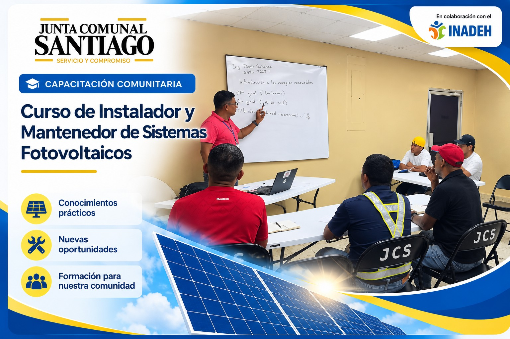

01 / INSTITUCIÓN
Quiénes somos
La Junta Comunal de Santiago es la organización comunitaria del corregimiento de Santiago, en Veraguas.
Antecedentes documentados
La Procuraduría de la Administración conserva la consulta C-242-96 de esta Junta, aprobada el 9 de septiembre de 1996. Es un antecedente documental; no establece su fecha de fundación.
Archivo de la Procuraduría ↗
Organización y participación
El reglamento interno regula las actuaciones de la Junta, sus integrantes, reuniones y la escogencia de directivas de las Juntas de Desarrollo Local.
Entre sus ámbitos de trabajo están la organización comunitaria y la participación de los barrios y sectores en el desarrollo local.
Reglamento interno · Resolución N.º 08 de 2022 ↗
Administración 2024–2029
El Tribunal Electoral registra a Carlos “Caly” Ruiz como representante proclamado por Santiago (Cabecera) en las elecciones de 2024.
Tribunal Electoral · cuadro 13, página 12 ↗
La misión, visión y estructura administrativa se incorporarán cuando se validen sus documentos institucionales.
02 / CIUDADANÍA
Servicios
La participación comunitaria y la organización de las Juntas de Desarrollo Local forman parte del marco de actuación documentado de la Junta.
Consultar marco de participación ↗
Atención y orientación
Mantenimiento de parques y áreas verdes
Atención de solicitudes comunitarias para jornadas de limpieza y corte de grama, conforme a la información proporcionada por la Junta.
Conocer esta acción comunitaria →Los requisitos, programación y catálogo de otros servicios siguen pendientes de validación. La solicitud digital está en preparación.
Consultar canales de contacto →
03 / ACTUALIDAD
Noticias y Actividades
Este espacio reunirá noticias, comunicados, actividades y avisos institucionales recientes, después de su revisión y aprobación.

Capacitación Comunitaria
Curso de Instalador y Mantenedor de Sistemas Fotovoltaicos
La Junta Comunal de Santiago continúa promoviendo oportunidades de formación técnica para los residentes de nuestro corregimiento.
Leer publicación completa
Mediante gestiones realizadas ante el Instituto Nacional de Formación Profesional y Capacitación para el Desarrollo Humano (INADEH), se desarrolla esta capacitación orientada al conocimiento, instalación y mantenimiento de sistemas de energía solar fotovoltaica.
Esta iniciativa busca fortalecer las capacidades técnicas de los participantes y contribuir a nuevas oportunidades de desarrollo laboral.
En colaboración con el INADEH.
Solidaridad Comunitaria
Apoyo al traslado de ayuda para personas afectadas en Soná
Apoyo comunitario para llevar ayuda a las personas afectadas en el área de Soná.
Leer publicación completa
La Junta Comunal de Santiago brindó apoyo a personas del corregimiento para trasladar ayuda a los afectados en el área de Soná.
04 / COMUNIDAD
Proyectos
Las fichas permitirán consultar descripción, fecha, ubicación, estado y fotografías autorizadas de cada proyecto.